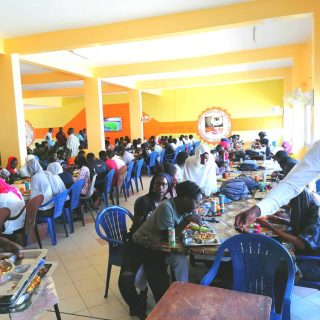

bienvenue dans la plateforme du campus social

RESTAURANT
HOPITAL
LES BUS
PAVILLON
par ses nombreux services(
bourses et aides financieres, logement, restauration, transports, aide sociale, culture et loisirs
),
le service aux etudiants peut faciliter votre integration et votre vie quotidienne. vous pourrez manger de bons plats , et, ce, pour un petit prix, dans tous les restaurants universitaires. pour que vos premiers pas dans notre universite et sur le campus ne se transforment pas en parcours du combattant, diverses informations pratiques(restauration, transports, assistances sociales, sante) ont ete regroupes dans ce site.
retour vers l acceuil